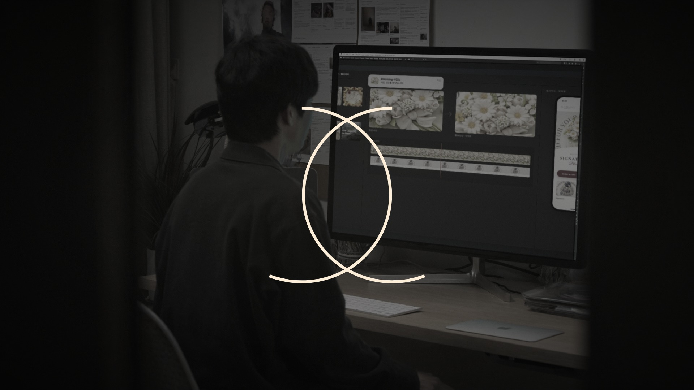
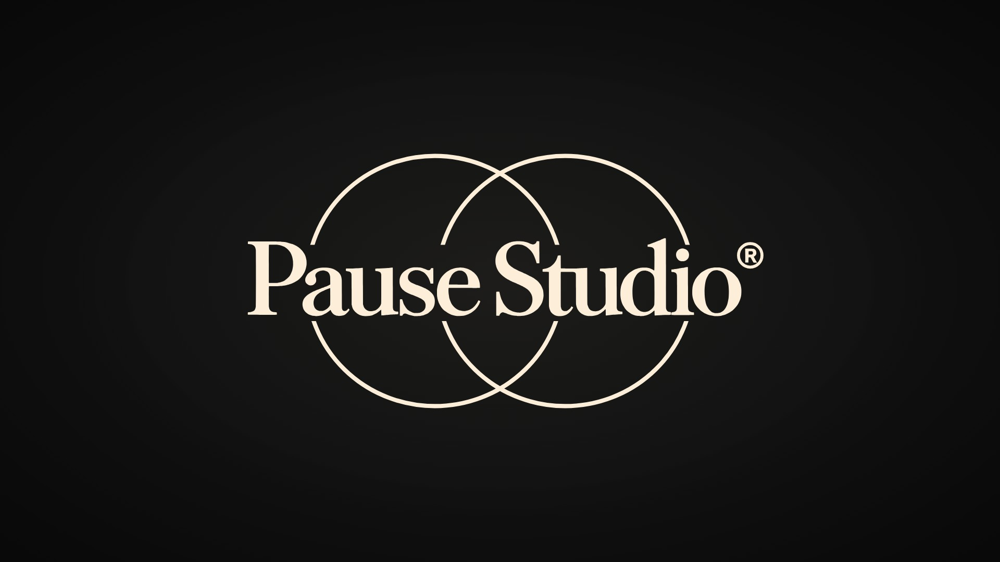
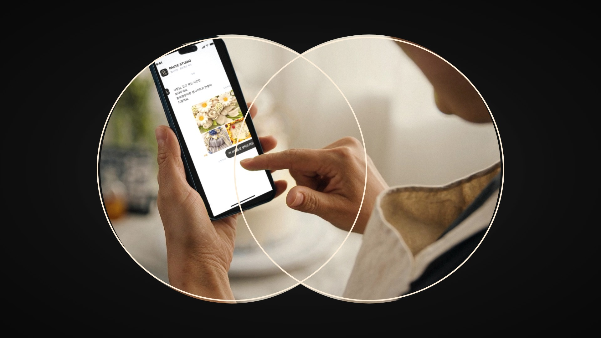
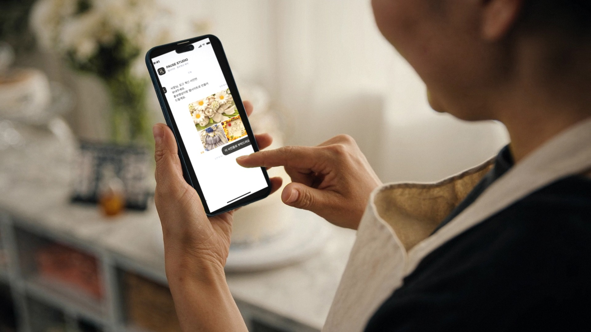
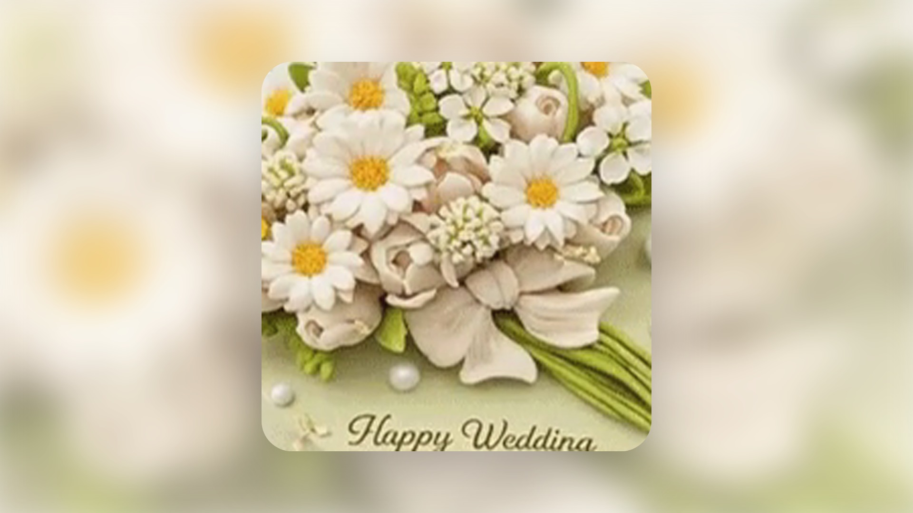
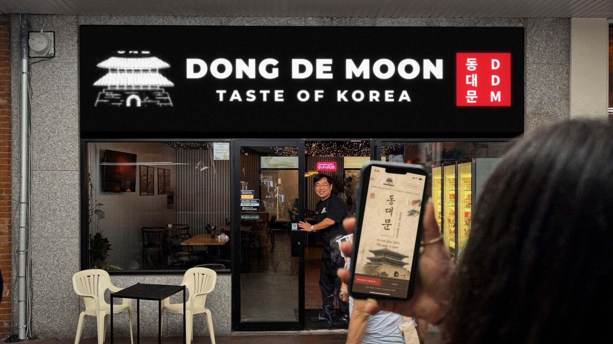
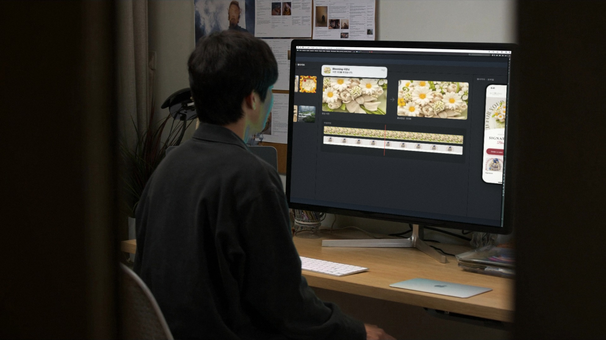

PAUSE STUDIO — 10차 콘티: 실사 화질 · 로고로 끝나고 로고로 시작하는 무한 반복
실사 화질: 모든 장면을 실제 카메라·렌즈 기준(Sony A7 IV · 35/50mm)으로 다시 생성 — 필름 흉내·과한 그레인 제거, 초점은 인물·화면에 또렷하게, 뒤는 자연스러운 렌즈 흐림 · 화면 합성은 유리 반사·LCD 검정 수준·미세한 부드러움으로 붙인 티 줄임 무한 반복: 약 24초 · 첫 프레임 = 마지막 프레임 = PAUSE STUDIO 로고 카드 · "PAUSE(일시정지)"라는 이름 그대로, 마지막 장면이 멈추는 순간 로고가 그려짐
루프 연결 — 끝에서 처음으로

0:22.5–0:23.5
끝 ①마지막 장면이 "일시정지"되듯 멈추며 색이 빠지고, 로고의 두 원이 가운데부터 그려짐

0:23.5–24 / 0:00–0:01.5
끝 ② = 시작PAUSE STUDIO 로고 카드 — 영상의 마지막 프레임이자 첫 프레임이라 이음매 없이 반복

0:01.5–0:02.5
시작로고의 두 원이 렌즈처럼 커지며 그 안으로 컷 1이 보이고, 원이 화면 밖으로 나가면 컷 1
본편 7컷

0:02.5–0:05
컷 1 케이크 가게 · 아침사장님이 케이크 사진을 채팅으로 보내고 "보내기"를 누름

0:05–0:07.5
컷 2 화면 인서트보낸 사진이 화면을 채우고 → 정지 사진이 움직이기 시작 = AI 홍보영상
0:07.5–0:10.5
컷 3 폰손비 카페 · 현지 손님 iPhone같은 케이크가 Blooming 모바일 사이트 히어로 영상으로 → 스크롤 → "Order a cake"

0:10.5–0:13.5
컷 4 시내 밤 · 동대문 가게 앞보내주신 사진처럼: 화강암 벽, 검은 간판, 유리문, 안쪽 골함석 벽·나무 테이블·조명, 앞의 크림색 플라스틱 의자. 휴대폰 속 사이트 ↔ 눈앞의 간판, 사장님이 문을 열어 맞음
0:13.5–0:16.5
컷 5 냉장 설비 작업장 · 노을빛고객과 통화하며 노트북의 ChillenQ 사이트를 보는 담당자, 옆에 냉장 트레일러
0:16.5–0:19.5
컷 6 시내 유학원 · 스카이타워 창밖상담사와 한국인 가족, 테이블 위 MacBook에 K-VIBE

0:19.5–0:22.5
컷 7 PAUSE 작업실 · 밤받은 사진 → 영상 → 모바일 사이트, 새 사진 알림이 뜨는 순간 화면이 멈춤

 0:07.5–0:10.5
0:07.5–0:10.5 0:13.5–0:16.5
0:13.5–0:16.5 0:16.5–0:19.5
0:16.5–0:19.5